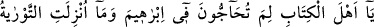

yani bu temel kâideden yüz çevirirlerse onlara şöyle deyin: “Şâhid olun biz
müslümanlarız” Allah’ın bizi dâvet ettiği tevhidde, şirki terk etmeyi ve samimi olarak
sırf O’na, kulluk etmeyi kabul ettik.
Hıristiyanları şâhid tutmasının sırrı kıyâmet günü, nasıl ki müslümanlar onlara
şâhidlik edecekse, bunların da müslümanların İslâm ve tevhid üzere olduklarına şehâdet
etmelerini sağlamaktır. Nitekim Hz. Peygamber (s.a.), Ebû Said el-Hudrî’ye şöyle
demiştir:
“Görüyorum ki çölü ve koyunları çok seviyorsun. Çölde koyunlarını otlatırken,
namaz vakti gelip de ezan okuduğun zaman yüksek sesle oku. Çünkü, müezzinin
sesinin ulaştığı yerdeki hiçbir cin, insan veya başka bir varlık yoktur ki, kıyâmet
günü onun için şâhidlik etmesin.”[50] Böylece kâfirlerin kıyâmet günü onların
müslüman ve muvahhid olduğuna şâhidlik etmeleri kendi aleyhlerine delil teşkîl
edecektir.
Tevhid; kendisini ihlasla kabul edenler için gayb âleminden esen bir rüzgardır,
esasların esasıdır, tutunulacak sağlam bir kulptur (urve-i vüskâ). Öyleyse, akıllı bir
adam, mâna ve delâletleri üzerinde kafa yormayıp onun esaslarına yüz çevirmek
sûretiyle Allah’ın kitabına karşı çıkmamalı; bilakis, ilim ve amel yoluna girmeli; kefene
sarılıp üzerine toprak atılmazdan evvel, cehâlet, azgınlık ve dalâletten uzak durmalıdır.
Abdurrahman Câmi (k.s.) der ki:
Kisrâ’nın huzurunda hikmet ehli konuşuyorlardı:
Gam deryasından gelen çetin dalgaların en büyüğü hakkında
Birisi dedi ki: En büyük dert uzun süren hastalıktır.
Bir başkası da: En zor şey ihtiyarlık ile birlikte fakirliktir.
Bir üçüncüsü de: En fenâ şey ecel yakın iken kötü amele devamdır.
En isâbetli söz olarak üçüncüye ait söz seçildi.
Bir gün Enüşirvân’ın sohbet meclisinde, üç düşünür biraraya geldi. Söz dönüp
dolaşıp en sıkıntılı şeyin ne olduğu konusuna gelince, Rum düşünür: “Yaşlılıkta fakru
zarûret çekmektir.” dedi. Hindli düşünür de: “Birçok gam ve kederin yanısıra,
hastalanmak ve bedenî bir illete tutulmaktır.” dedi. Öteki düşünür Büzürc-i Mihr ise
şöyle dedi: “En şiddetli şey: Kötü amellerle dolu bir ömrün ecelinin yaklaşmasıdır.”
Hakîm, Büzürc-i Mihr’in bu sözünde karar kıldılar.
Allah, cümlemize ibâdetlerin tadına varmayı nasip eylesin. Tüm lezzetleri sona
erdiren ölüm gelmezden evvel bizi tevfîki ile desteklesin. Âmin.